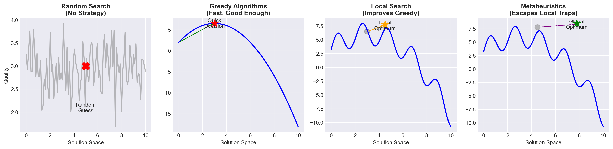
The Metaheuristics Toolkit
Lecture 9 - Management Science
Introduction
Client Briefing: La Étoile Restaurant
. . .
Restaurant Manager’s Crisis:
“We need to schedule 18 servers for this weekend, but we don’t have enough experienced staff to meet all quality requirements!”
The Staffing Challenge
La Étoile - Three Michelin star restaurant facing a scheduling crisis:
- 18 servers available (6 experienced, 12 junior)
- 6 shifts this weekend (Fri-Sun, lunch & dinner)
- Each shift needs 3 servers (at least 1 experienced)
- Problem: Need 8 experienced servers, only have 6!
- Cost: €50/shift junior, €80/shift experienced, €500 penalty per understaffed experienced position
. . .
How do we minimize the damage while maintaining service quality?
Today’s Learning Objectives
By the end of this lecture, you will:
- Understand why local search gets trapped and needs help
- Master four powerful metaheuristics:
- Simulated Annealing (SA)
- Genetic Algorithms (GA)
- Tabu Search
- Ant Colony Optimization (ACO)
- Implement working code for each metaheuristic
- Choose the right metaheuristic for your problem
- Avoid common implementation pitfalls
- Apply metaheuristics to real-world problems
. . .
Let’s escape those local optima!
Quick Recap: Our Optimization Journey
Why Simple Methods Fail
Restaurant Staffing: The Numbers
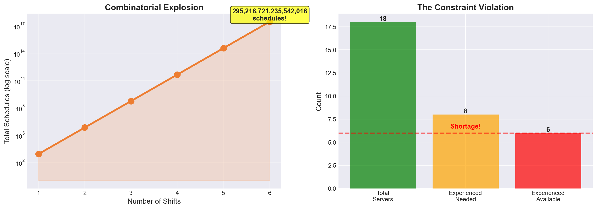
With 139 billion possibilities, we need smart exploration!
Why Greedy Gets Stuck
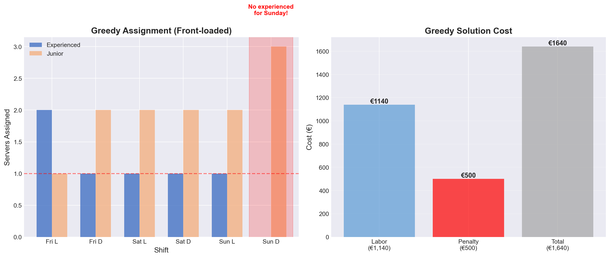
Greedy allocates resources early, creating problems later!
Local Search Also Struggles
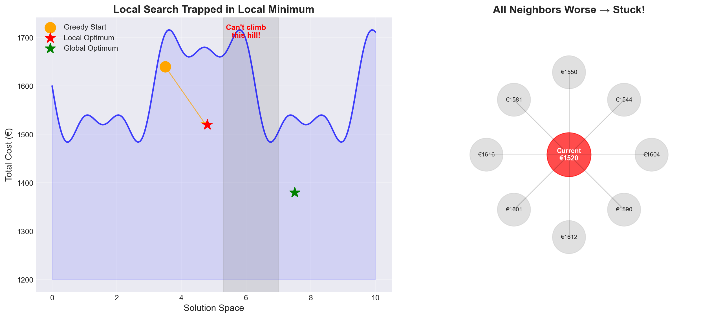
We need mechanisms to accept temporary degradation!
Mathematical Foundations
Core Metaheuristic Concepts
Solution Space - \(S\) = set of all feasible solutions - \(f(s)\) = objective function value - \(N(s)\) = neighborhood of solution \(s\)
Acceptance Probability - Always accept improvements - Sometimes accept degradations - Control randomness systematically
Key Mathematical Tools
Boltzmann Distribution: \[P(\text{accept}) = e^{-\Delta/T}\]
Fitness Selection: \[P(\text{select}_i) = \frac{f_i}{\sum_{j=1}^n f_j}\]
Convergence: \[\lim_{t \to \infty} P(s^* | t) = 1\]
. . .
These foundations enable systematic exploration!
Metaheuristic #1: Simulated Annealing
The Metallurgy Metaphor
Annealing Metal: 1. Heat to high temperature 2. Atoms move freely 3. Slowly cool down 4. Forms perfect crystal structure
Key insight: Temperature controls randomness
Optimization: 1. Start with high “temperature” 2. Accept bad moves often 3. Gradually reduce temperature 4. Converge to good solution
Key insight: Escape local optima early
. . .
Mathematical Foundation:
\[P(\text{accept worse solution}) = \begin{cases} 1 & \text{if } \Delta \leq 0 \\ e^{-\Delta/T} & \text{if } \Delta > 0 \end{cases}\]
Temperature Controls Acceptance
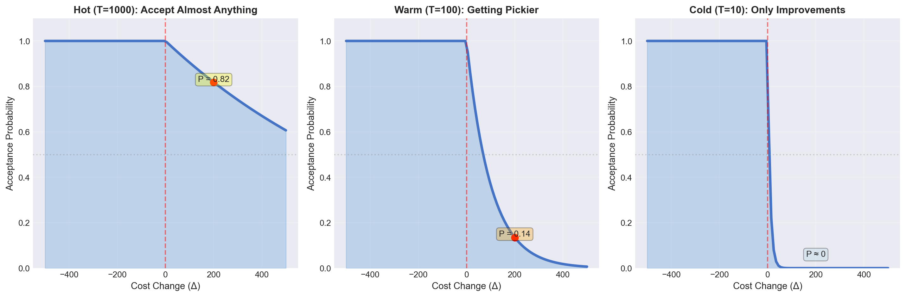
Simulated Annealing: Implementation
def simulated_annealing(initial_solution, cost_function, get_neighbor,
initial_temp=1000, cooling_rate=0.95, max_iter=1000):
"""
Simulated Annealing metaheuristic implementation
"""
current = initial_solution
current_cost = cost_function(current)
best = current
best_cost = current_cost
temperature = initial_temp
history = []
for iteration in range(max_iter):
# Get random neighbor
neighbor = get_neighbor(current)
neighbor_cost = cost_function(neighbor)
# Calculate acceptance probability
delta = neighbor_cost - current_cost
if delta < 0: # Better solution
accept_prob = 1.0
else: # Worse solution
accept_prob = np.exp(-delta / temperature)
# Accept or reject
if np.random.random() < accept_prob:
current = neighbor
current_cost = neighbor_cost
# Update best if needed
if current_cost < best_cost:
best = neighbor
best_cost = neighbor_cost
# Cool down
temperature *= cooling_rate
history.append((iteration, current_cost, best_cost, temperature))
return best, best_cost, history
print("Simulated Annealing ready to escape local optima!")Simulated Annealing ready to escape local optima!SA in Action: Restaurant Staffing
# Define the restaurant staffing problem
class RestaurantStaffing:
def __init__(self):
self.n_servers = 18
self.n_experienced = 6
self.n_shifts = 6
self.experienced_cost = 80
self.junior_cost = 50
self.penalty = 500
def cost(self, schedule):
"""Calculate total cost including penalties"""
total_cost = 0
for shift in schedule:
experienced_in_shift = sum(1 for s in shift if s < self.n_experienced)
junior_in_shift = len(shift) - experienced_in_shift
# Labor costs
total_cost += experienced_in_shift * self.experienced_cost
total_cost += junior_in_shift * self.junior_cost
# Penalty if no experienced server
if experienced_in_shift == 0:
total_cost += self.penalty
return total_cost
def get_neighbor(self, schedule):
"""Swap two server assignments"""
new_schedule = [shift.copy() for shift in schedule]
# Random swap between shifts
shift1, shift2 = np.random.choice(self.n_shifts, 2, replace=False)
if len(new_schedule[shift1]) > 0 and len(new_schedule[shift2]) > 0:
server1 = np.random.choice(new_schedule[shift1])
server2 = np.random.choice(new_schedule[shift2])
new_schedule[shift1].remove(server1)
new_schedule[shift2].remove(server2)
new_schedule[shift1].append(server2)
new_schedule[shift2].append(server1)
return new_schedule
# Create initial greedy solution
problem = RestaurantStaffing()
initial = [[0,1,12], [2,13,14], [3,15,16], [4,6,7], [5,8,9], [10,11,17]]
print(f"Initial greedy cost: €{problem.cost(initial)}")Initial greedy cost: €1580Visualizing SA Performance
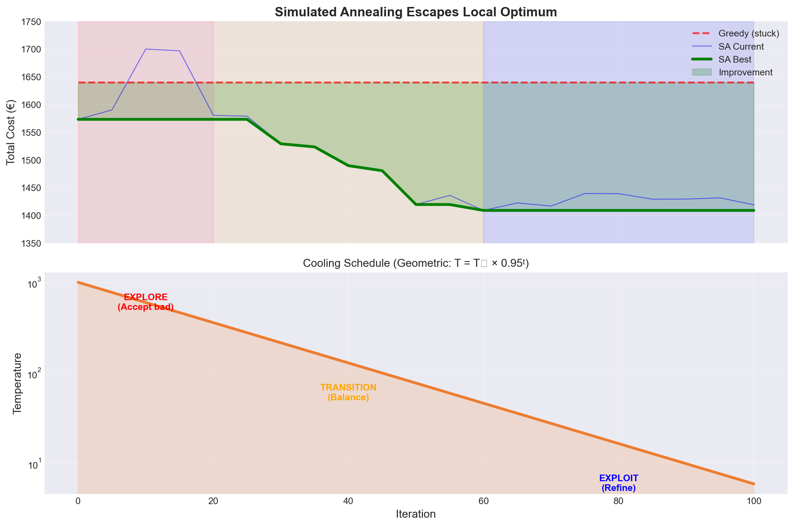
Notice: SA accepts worse solutions early, enabling escape from local optima!
Common SA Implementation Bugs
Bug #1: Temperature Too Low
# ❌ Wrong
initial_temp = 10 # Too cold!
# ✅ Correct
initial_temp = 1000 # Hot startBug #2: Cooling Too Fast
# ❌ Wrong
cooling_rate = 0.5 # 50% drop!
# ✅ Correct
cooling_rate = 0.95 # Gentle coolingBug #3: Wrong Acceptance
# ❌ Wrong
if delta < 0:
accept = True
else:
accept = False # Never escape!
# ✅ Correct
if delta < 0:
accept = True
else:
accept = random() < exp(-delta/T)Bug #4: No Best Tracking
# ❌ Wrong
return current # Might be worse!
# ✅ Correct
return best # Always return best seenMetaheuristic #2: Genetic Algorithms
Evolution as Optimization
Natural Selection: 1. Population of individuals 2. Fittest survive & reproduce 3. Offspring inherit traits 4. Mutations create diversity 5. Evolution finds adaptation
Darwin’s insight: Survival of the fittest
Optimization: 1. Population of solutions 2. Best solutions selected 3. Crossover combines solutions 4. Mutation adds variation 5. Evolution finds optimum
Our insight: Parallel exploration
. . .
Mathematical Foundation:
\[P(\text{select}_i) = \frac{fitness_i}{\sum_{j=1}^{pop} fitness_j} \text{ or } P(\text{select}_i) = \frac{rank_i}{\sum_{j=1}^{pop} j}\]
The Genetic Process
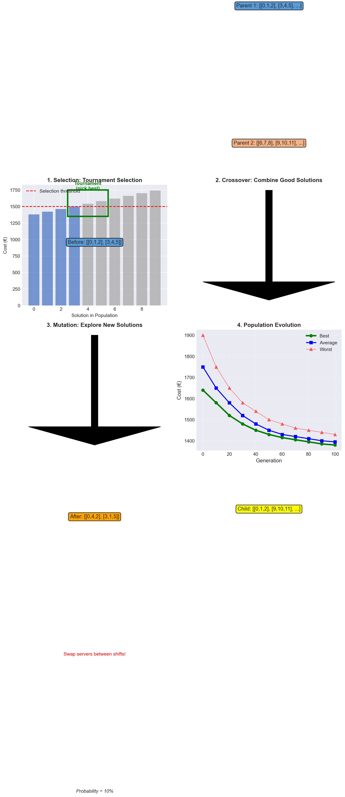
Evolution drives the population toward better solutions!
GA vs SA: Head-to-Head
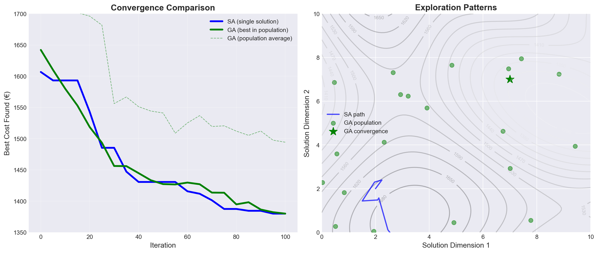
SA explores sequentially, GA explores in parallel!
Common GA Implementation Pitfalls
Pitfall #1: Premature Convergence
# ❌ Wrong: Too much selection pressure
tournament_size = 10 # Too large!
mutation_rate = 0.01 # Too small!
# ✅ Correct: Balance exploration
tournament_size = 3
mutation_rate = 0.1Pitfall #2: Invalid Solutions
# ❌ Wrong: Crossover breaks constraints
child = parent1[:3] + parent2[3:]
# May have duplicate servers!
# ✅ Correct: Repair or smart operators
child = repair_schedule(child)Pitfall #3: Poor Diversity
# ❌ Wrong: Clone best solution
new_pop = [best] * population_size
# ✅ Correct: Maintain diversity
new_pop = [best] # Elitism
# Add varied offspringPitfall #4: Wrong Selection
# ❌ Wrong: Always pick best
parent = population[0]
# ✅ Correct: Probabilistic selection
parent = tournament_select(population)More Metaheuristics
Metaheuristic #3: Tabu Search
class TabuSearch:
def __init__(self, tabu_tenure=10):
"""
Tabu Search: Memory-based metaheuristic
"""
self.tabu_list = [] # List of forbidden moves
self.tabu_tenure = tabu_tenure
def is_tabu(self, move):
"""Check if move is forbidden"""
return move in self.tabu_list
def update_tabu_list(self, move):
"""Add move to tabu list and maintain size"""
self.tabu_list.append(move)
if len(self.tabu_list) > self.tabu_tenure:
self.tabu_list.pop(0) # Remove oldest
def search(self, initial, get_neighbors, cost_fn, max_iter=100):
"""Main tabu search algorithm"""
current = initial
best = current
best_cost = cost_fn(current)
for _ in range(max_iter):
# Get all neighbors
neighbors = get_neighbors(current)
# Filter out tabu moves (unless aspiration)
candidates = []
for neighbor, move in neighbors:
if not self.is_tabu(move) or cost_fn(neighbor) < best_cost:
candidates.append((neighbor, move))
if not candidates:
break
# Select best non-tabu neighbor
best_neighbor = min(candidates, key=lambda x: cost_fn(x[0]))
current, move = best_neighbor
# Update tabu list
self.update_tabu_list(move)
# Update best if improved
if cost_fn(current) < best_cost:
best = current
best_cost = cost_fn(current)
return best, best_cost
print("Tabu Search prevents cycling back!")Tabu Search prevents cycling back!Metaheuristic #4: Ant Colony Optimization
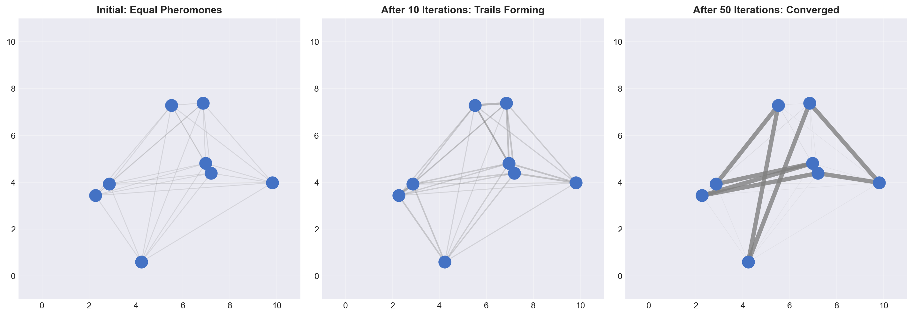
Ants deposit pheromones, creating emergent intelligence!
Decision Framework
When to Use Which Metaheuristic?
| Method | Time | Quality | Complexity | Best For | Parameters |
|---|---|---|---|---|---|
| Random | ⚡⚡⚡⚡ | ⭐ | Trivial | Baseline | None |
| Greedy | ⚡⚡⚡ | ⭐⭐ | Simple | Quick decisions | 1-2 |
| Local Search | ⚡⚡ | ⭐⭐⭐ | Medium | Improvement | 2-3 |
| Simulated Annealing | ⚡⚡ | ⭐⭐⭐⭐ | Medium | Single solution | 3-4 |
| Genetic Algorithm | ⚡ | ⭐⭐⭐⭐ | High | Population-based | 5-6 |
| Tabu Search | ⚡⚡ | ⭐⭐⭐ | Medium | Avoiding cycles | 2-3 |
| Ant Colony | ⚡ | ⭐⭐⭐⭐ | High | Path problems | 4-5 |
. . .
Choose based on: time available, solution quality needed, and problem structure
Implementation Strategy
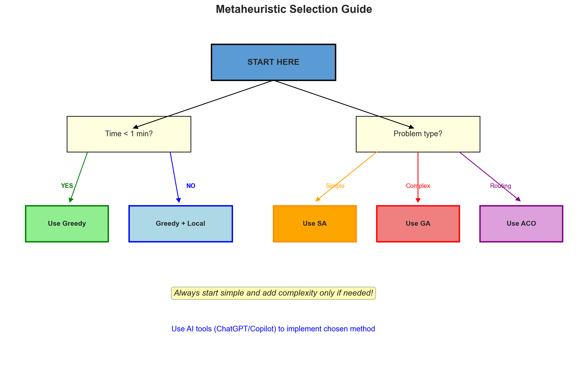
Key Implementation Tips
- Start Simple: Always try greedy first as baseline
- Profile Your Problem: Understand constraints before choosing
- Tune Parameters: Default values rarely optimal
- Track Progress: Monitor convergence to know when to stop
- Hybrid Approaches: Combine methods for best results
- Use AI Assistance: Let tools handle implementation details
. . .
TipPro Tip
Most real-world problems are solved with greedy + local search. Only use metaheuristics when these fail!
Mission Briefing
Your Restaurant Challenge
Scenario: La Étoile needs weekend staffing schedule
Resources: - 18 servers (6 experienced @ €80, 12 junior @ €50) - 6 shifts (3 servers each, need 1+ experienced) - Penalty: €500 per shift without experienced server
Your Tools: 1. Greedy assignment 2. Local search improvements 3. Simulated annealing 4. Genetic algorithm 5. Your creativity!
. . .
Remember: Document your approach and reasoning!
Summary: The Metaheuristics Toolkit
What We Learned - Why simple methods get stuck - How metaheuristics escape local optima - Four powerful techniques (SA, GA, Tabu, ACO) - When to use each approach - Implementation strategies
Key Takeaways - Start simple, add complexity as needed - Temperature/randomness enables escape - Population-based search explores broadly - Memory prevents cycling - AI tools are your implementation allies
. . .
You now have a complete optimization toolkit - from greedy to genetic algorithms!
Break Time!
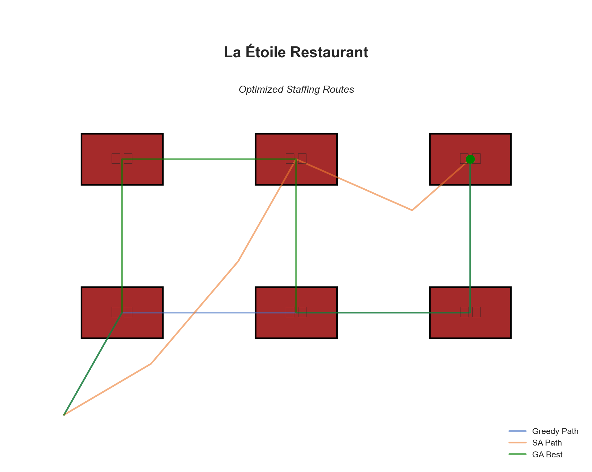
Time to practice with real problems!
Genetic Algorithm Implementation
def genetic_algorithm(population_size=50, generations=100,
mutation_rate=0.1, crossover_rate=0.8):
"""
Genetic Algorithm implementation for staff scheduling
"""
def create_individual():
"""Create random schedule"""
servers = list(range(18))
np.random.shuffle(servers)
return [servers[i:i+3] for i in range(0, 18, 3)]
def fitness(individual):
"""Fitness = 1 / (1 + cost)"""
cost = problem.cost(individual)
return 1.0 / (1.0 + cost)
def crossover(parent1, parent2):
"""Uniform crossover between schedules"""
if np.random.random() > crossover_rate:
return parent1.copy()
child = []
for shift1, shift2 in zip(parent1, parent2):
if np.random.random() < 0.5:
child.append(shift1.copy())
else:
child.append(shift2.copy())
return child
def mutate(individual):
"""Swap mutation"""
if np.random.random() < mutation_rate:
# Swap two random servers
shift1, shift2 = np.random.choice(6, 2, replace=False)
if len(individual[shift1]) > 0 and len(individual[shift2]) > 0:
idx1 = np.random.randint(len(individual[shift1]))
idx2 = np.random.randint(len(individual[shift2]))
individual[shift1][idx1], individual[shift2][idx2] = \
individual[shift2][idx2], individual[shift1][idx1]
return individual
# Initialize population
population = [create_individual() for _ in range(population_size)]
best_history = []
for gen in range(generations):
# Evaluate fitness
fitnesses = [fitness(ind) for ind in population]
# Track best
best_idx = np.argmax(fitnesses)
best_history.append(1.0 / fitnesses[best_idx] - 1.0)
# Selection and reproduction
new_population = [population[best_idx]] # Elitism
while len(new_population) < population_size:
# Tournament selection
parent1 = tournament_select(population, fitnesses)
parent2 = tournament_select(population, fitnesses)
# Crossover and mutation
child = crossover(parent1, parent2)
child = mutate(child)
new_population.append(child)
population = new_population
return population[0], best_history
def tournament_select(population, fitnesses, tournament_size=3):
"""Tournament selection"""
indices = np.random.choice(len(population), tournament_size)
tournament_fitnesses = [fitnesses[i] for i in indices]
winner_idx = indices[np.argmax(tournament_fitnesses)]
return population[winner_idx]
print("Genetic Algorithm with tournament selection ready!")Genetic Algorithm with tournament selection ready!Practical Implementation
Using AI Tools Effectively
Good Prompts for ChatGPT/Copilot:
"Implement simulated annealing for
staff scheduling with:
- 18 staff (6 senior, 12 junior)
- 6 shifts needing 3 staff each
- Cost: senior=$80, junior=$50
- Penalty: $500 if no senior
- Use swap neighborhood
- Temperature: 1000, cooling: 0.95"✅ Specific problem details
✅ Clear constraints
✅ Algorithm parameters
Bad Prompts:
"Make a metaheuristic for my
scheduling problem"❌ Vague problem description
❌ No constraints specified
❌ No algorithm choice
❌ Missing parameters
Remember: AI tools need context!
Debugging Metaheuristics
def debug_metaheuristic(algorithm_name, history):
"""
Helper to diagnose metaheuristic performance
"""
# Check convergence
if history[-1] == history[-100]:
print(f"⚠️ {algorithm_name} stuck - try:")
print(" - Increase temperature (SA)")
print(" - Increase mutation rate (GA)")
print(" - Reduce tabu tenure (Tabu)")
# Check exploration
variance = np.var(history[:50])
if variance < 0.01:
print(f"⚠️ {algorithm_name} not exploring - try:")
print(" - Higher initial temperature")
print(" - Larger population")
print(" - More diverse initialization")
# Check improvement rate
improvement = (history[0] - history[-1]) / history[0]
print(f"📊 Total improvement: {improvement:.1%}")Real-World Considerations
Computational Budget - Wall-clock time matters - Memory constraints - Parallel processing opportunities - Cloud vs local execution
Solution Quality Requirements - “Good enough” vs optimal - Consistency vs best possible - Explainability needs
Problem Characteristics - Static vs dynamic - Deterministic vs stochastic - Single vs multi-objective - Hard vs soft constraints
Implementation Reality - Development time - Maintenance burden - Team expertise - Integration complexity
Advanced Topics
Hybrid Metaheuristics
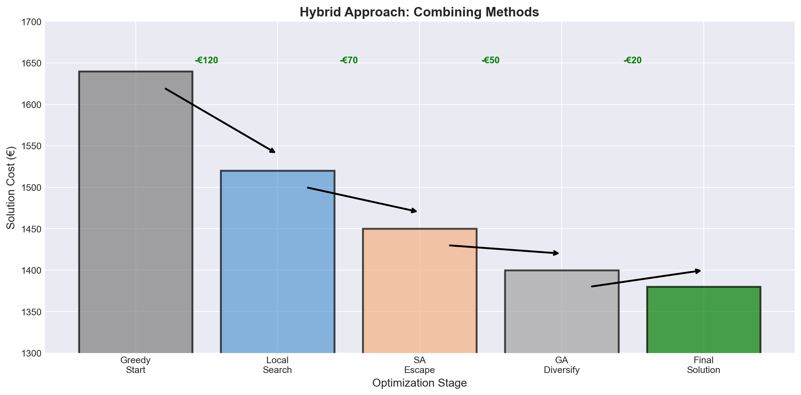
Combine methods sequentially for best results!
Parameter Tuning Strategies
Grid Search
temps = [100, 500, 1000, 2000]
coolings = [0.9, 0.95, 0.99]
for T in temps:
for alpha in coolings:
run_SA(T, alpha)Adaptive Parameters
# Self-adjusting temperature
if no_improvement > 50:
temperature *= 1.5 # ReheatRules of Thumb - SA: T₀ ≈ max expected delta - GA: pop_size ≈ 10 × variables - Tabu: tenure ≈ √problem_size - Mutation: 1/chromosome_length
Performance Metrics - Convergence speed - Solution quality - Robustness (variance) - Computational time
Competition Strategies
- Start Simple: Greedy baseline first (5 min)
- Quick Improvement: Local search (10 min)
- Smart Enhancement: Choose ONE metaheuristic (20 min)
- Fine-tune: Adjust parameters (10 min)
- Document: Explain choices (5 min)
. . .
WarningCompetition Tip
Don’t try to implement everything! Pick one approach and do it well.
Summary & Resources
Key Concepts to Remember
- Local Optima: Simple methods get trapped
- Acceptance Probability: P = exp(-Δ/T) enables escape
- Population Search: Parallel exploration beats sequential
- Memory: Prevents cycling and guides search
- Hybrid Approaches: Combine methods for best results
- AI Tools: Implementation helpers, not decision makers
Your Optimization Hierarchy
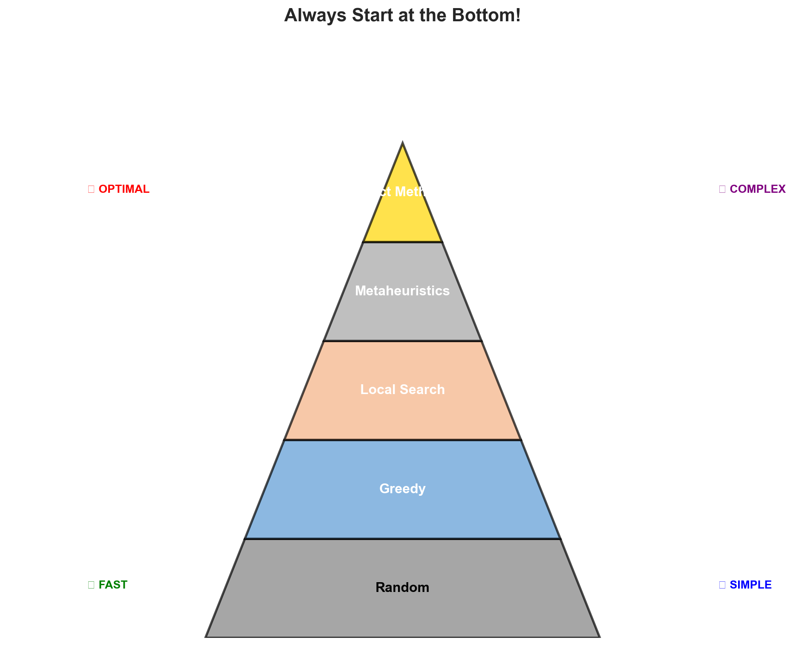
Additional Resources
Learn More: - Essentials of Metaheuristics (free book) - Google OR-Tools - DEAP Python Library for GA - SimPy for simulation
Practice Problems: - Vehicle Routing (VRP) - Job Shop Scheduling - Knapsack variants - Portfolio optimization
AI Assistant Prompts:
# Template for any problem:
"I need to solve [problem type] with:
- Variables: [list them]
- Constraints: [list them]
- Objective: [minimize/maximize what]
- Data: [provide sample]
Implement [specific algorithm] with:
- [Parameter 1]: [value]
- [Parameter 2]: [value]
Please include comments."Final Thoughts
“All models are wrong, but some are useful” - George Box
. . .
“Perfect is the enemy of good” - Voltaire
. . .
“Start where you are. Use what you have. Do what you can.” - Arthur Ashe
. . .
You now have a complete optimization toolkit. Use it wisely!
Break!
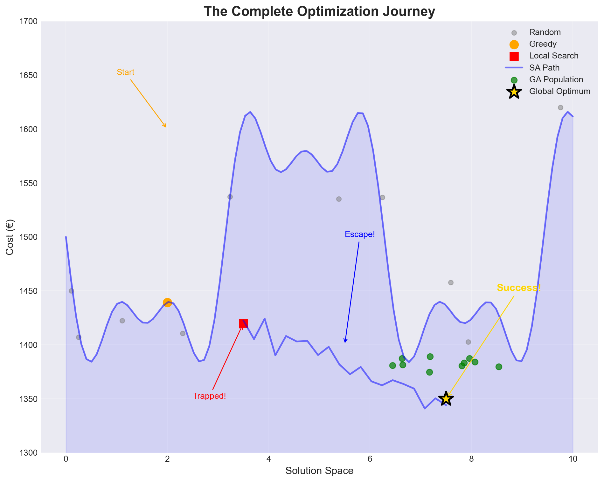
Ready to optimize? Let’s tackle the restaurant challenge!